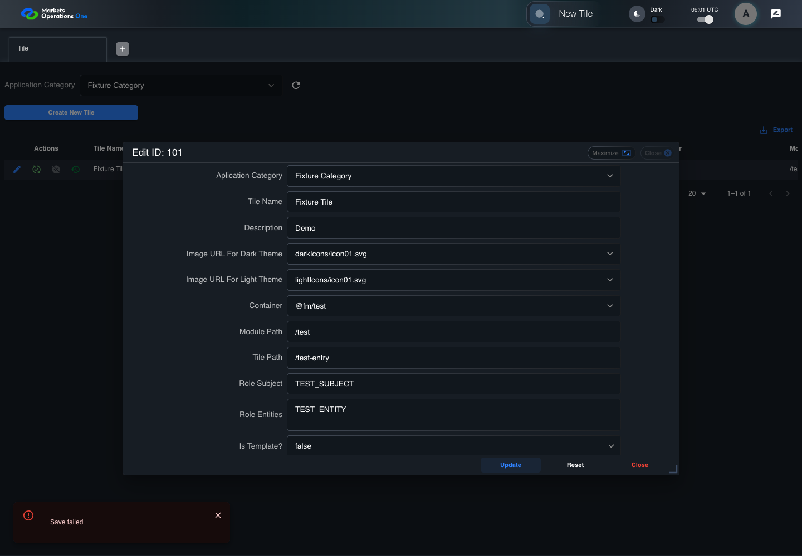

UX-018 administration boundary with step screenshots
FAIL · application/run-050/ux-018-administration-boundary-with-step-screenshots-dc295afc85ad-attempt-1 · ACTUAL_APPLICATION_LOCAL_SERVICES
Actual React administration screens. Controlled browser credentials, role, records, and BFF responses. Save probes persist the received UI payload without replacing it with expected values. Declared clock emulation controls field timers. Proposed accessibility and source-risk expectations remain separate from business approval.
2026-10-22T06:01:40.933Z to 2026-10-22T06:01:45.019Z
Assertions and result · Artifact manifest · Exact run inputs and source hashes
Result SHA-256:090c4fa1eaa97b990783c7afdea9d1bd2f2043e565ab19c383c067aee85007f0Retained failure details
[
{
"message": "Error: \u001b[2mexpect(\u001b[22m\u001b[31mreceived\u001b[39m\u001b[2m).\u001b[22mtoContain\u001b[2m(\u001b[22m\u001b[32mexpected\u001b[39m\u001b[2m) // indexOf\u001b[22m\n\nExpected substring: \u001b[32m\"alert\"\u001b[39m\nReceived string: \u001b[31m\"\"\u001b[39m",
"stack": "Error: \u001b[2mexpect(\u001b[22m\u001b[31mreceived\u001b[39m\u001b[2m).\u001b[22mtoContain\u001b[2m(\u001b[22m\u001b[32mexpected\u001b[39m\u001b[2m) // indexOf\u001b[22m\n\nExpected substring: \u001b[32m\"alert\"\u001b[39m\nReceived string: \u001b[31m\"\"\u001b[39m\n at /Users/lushevol/code/github/ratan-release-impact/workbench/e2e/audit-specs/admin-ux.spec.ts:111:22\n at AuditCapture.step (/Users/lushevol/code/github/ratan-release-impact/workbench/e2e/support/audit-fixture.ts:94:21)\n at /Users/lushevol/code/github/ratan-release-impact/workbench/e2e/audit-specs/admin-ux.spec.ts:39:31",
"location": {
"file": "/Users/lushevol/code/github/ratan-release-impact/workbench/e2e/audit-specs/admin-ux.spec.ts",
"column": 22,
"line": 111
},
"snippet": " 109 | await expect(snackbar.locator('.MuiSnackbarContent-root[role=\"alert\"]')).toHaveText('Save failed');\n 110 | const tree = await snackbar.ariaSnapshot(); await audit.record('save-error-accessibility-tree', tree);\n> 111 | expect(tree).toContain('alert'); expect(tree).toContain('Save failed'); return;\n | ^\n 112 | }\n 113 | if (text.includes('exposes a text or accessible state distinct')) {\n 114 | const first = await app.reveal('active', '101'), second = await app.reveal('active', '102');"
}
]Machine observations
- save-error-accessibility-tree.json
7ca8ce50547d1b576d4ebc48a40bea8aea54da12c1d9e0ee9c11428f5bea52d2 - ui-origin-admin-requests.json
0eacd37aecb4c9b67852d96c94b422daf929b777c7b2e2d3cf733723ca513620
Screenshot capture: CAPTURED. Named frames: 4.
Step screenshot bindings: COMPLETE. 3/3 canonical steps have execution screenshots.
Bindings measure structural coverage only. They do not establish screenshot content quality or relevance.
Screenshot content review: NOT_REVIEWED. Recorded context: 0/4 frames. Identical image bytes: 0 repeated frames. Recorded context does not establish human visual review.
Canonical step timeline
Given ADMIN-A has tile record 101 loaded; the controlled save response contains message "Save failed"
Execution: PASSED.
1. step-01 Visible state after step 1: Given ADMIN-A has tile record 101 loaded; the controlled save response contains message "Save failed"
2026-10-22T06:01:43.861Z · 1440×1000
Step: /Users/lushevol/code/github/ratan-release-impact/workbench/tasks/ui-test-coverage-20261022/test-cases.md:12838
SHA-256:919930c2a743655e01d9b8d66a3d11c1fcd2c27c7d3e0c725ffdc13a23953b64When ADMIN-A clicks the button labelled "Update" in the dialog with title text "edit ID: 101" on the administration page
Execution: PASSED.
2. step-02 Visible state after step 2: When ADMIN-A clicks the button labelled "Update" in the dialog with title text "edit ID: 101" on the administration page
2026-10-22T06:01:44.232Z · 1440×1000
Step: /Users/lushevol/code/github/ratan-release-impact/workbench/tasks/ui-test-coverage-20261022/test-cases.md:12839
SHA-256:02a027b0885b07c5386d4a44d6c8dc5fa877ffc2018d8d788d299165be84f65bThen The alert inside the snackbar with test ID "${MFE_APP_PREFIX_STYLE}_snackbar" on the current portal page contains "Save failed" in the accessibility tree
Execution: FAILED.3. step-03-failure Visible state when step 3 failed. Later steps did not execute.
2026-10-22T06:01:44.328Z · 1440×1000
Step: /Users/lushevol/code/github/ratan-release-impact/workbench/tasks/ui-test-coverage-20261022/test-cases.md:12840
SHA-256:c50dca88dd4a4fd4e406fd553e940b56311c6f08226b9b27271280955d5ae6cf
Additional named frames
Screenshots establish visible state only. Assertions and traces support functional claims.